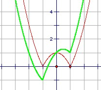

Draw the graph of the functions y = | x2 - 1 | and y = x + | x2 - 1 |. Find the number of roots of the equation x + | x2 - 1 | = k, where k is a real constant.
Answer
0 for k < -1
1 for k = -1
2 for -1 < k < 1
3 for k = 1
4 for 1 < k < 5/4
3 for k = 5/4
2 for k > 5/4
Solution

It is clear from the graph that there are no roots for k < -1, and one root for k = -1 (namely x = -1). Then for k > -1 there are two roots except for a small interval [1, 1+h]. At k = 1, there are 3 roots (x = -2, 0, 1). The upper bound is at the local maximum between 0 and 1. For such x, y = x + 1 - x2 = 5/4 - (x - 1/2)2, so the local maximum is at 5/4. Thus there are 3 roots at k = 5/4 and 4 roots for k ∈ (1, 5/4).

© John Scholes
jscholes@kalva.demon.co.uk
7 March 2004
Last corrected/updated 7 Mar 04